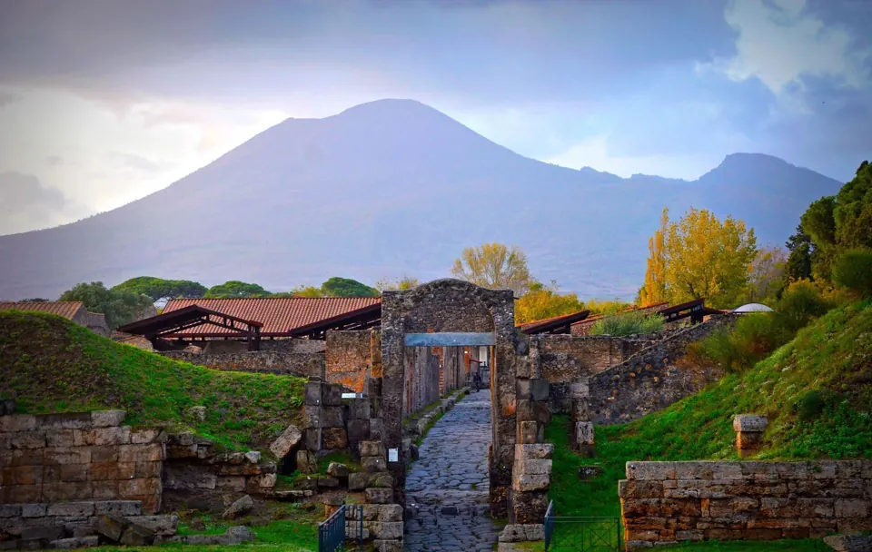
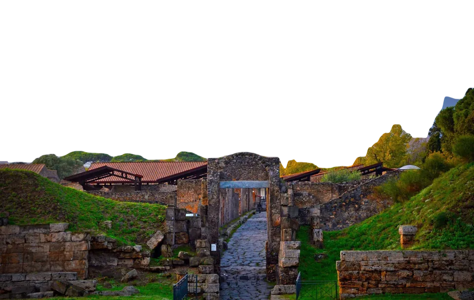
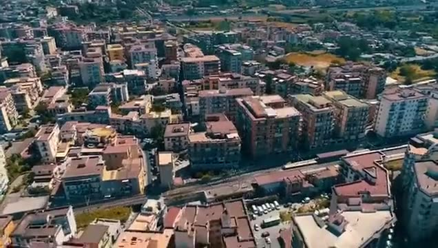
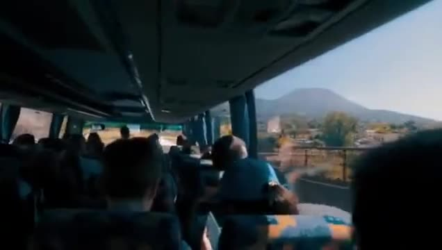
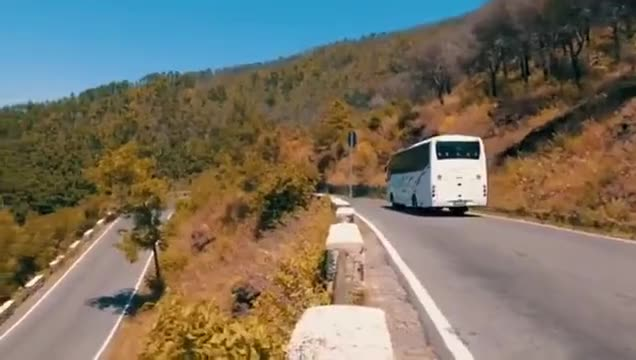
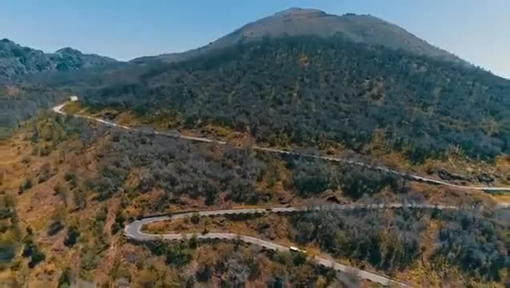
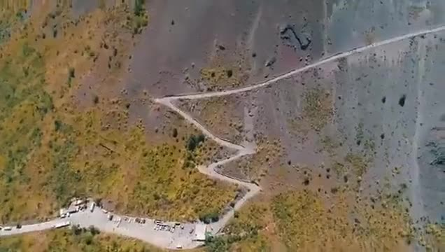
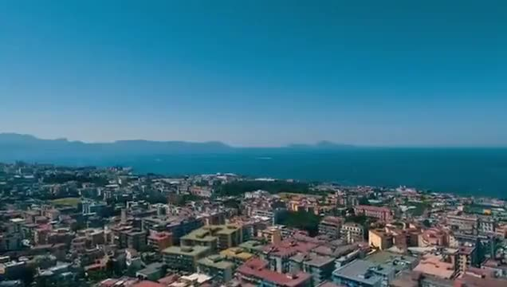

Dalla stazione di Ercolano Scavi al cratere del Vesuvio
La navetta parte a pochi passi dall'uscita della Circumvesuviana. Guarda il viaggio, tappa per tappa.






1 di 6
Ercolano Scavi
Navetta e ingresso al Gran Cono, in un solo biglietto
Il biglietto del cratere si esaurisce spesso: con il pacchetto hai la corsa della navetta abbinata alla tua fascia d'ingresso.
Demo · Video: Vesuvio Express (spot del cliente, rimontato). Foto di apertura: Pixabay, foto 4635882 (licenza Pixabay, da riverificare). Le foto definitive arriveranno dal servizio fotografico.